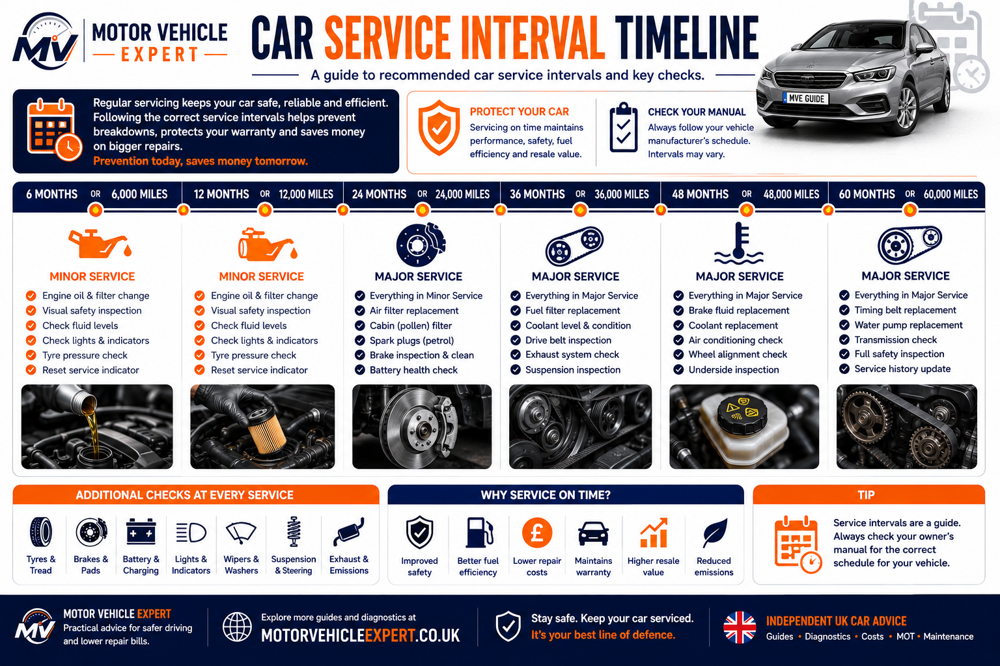
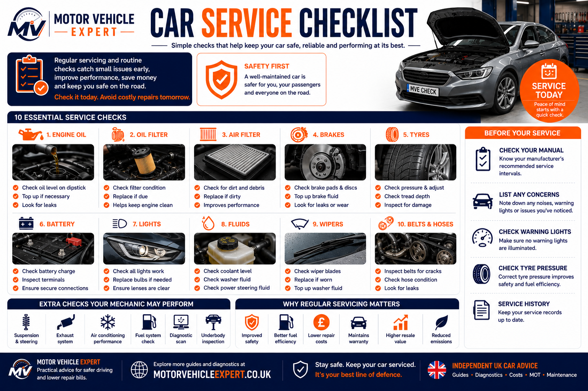
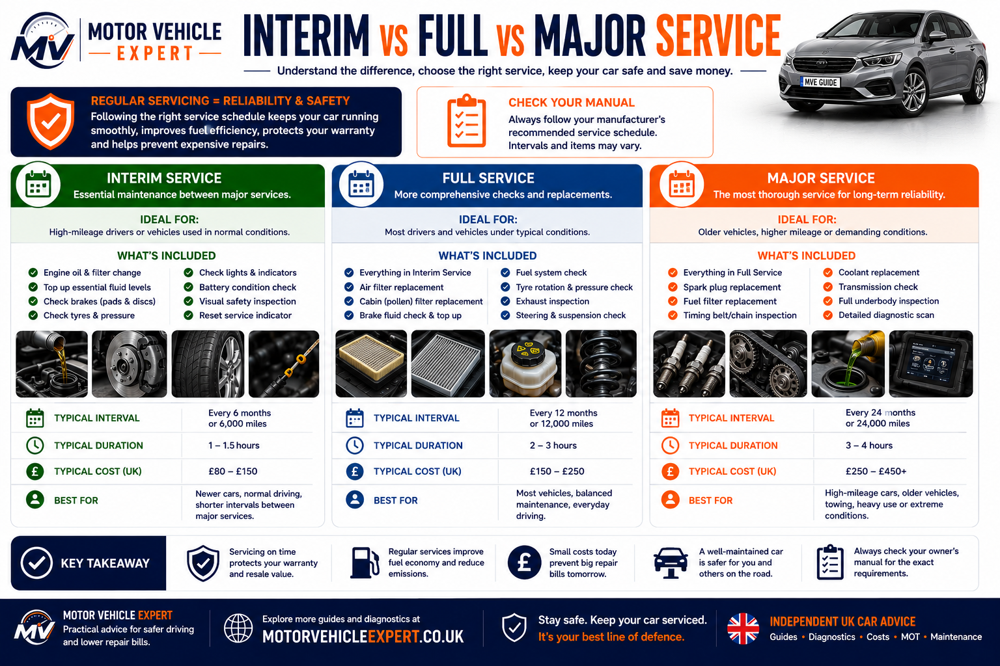
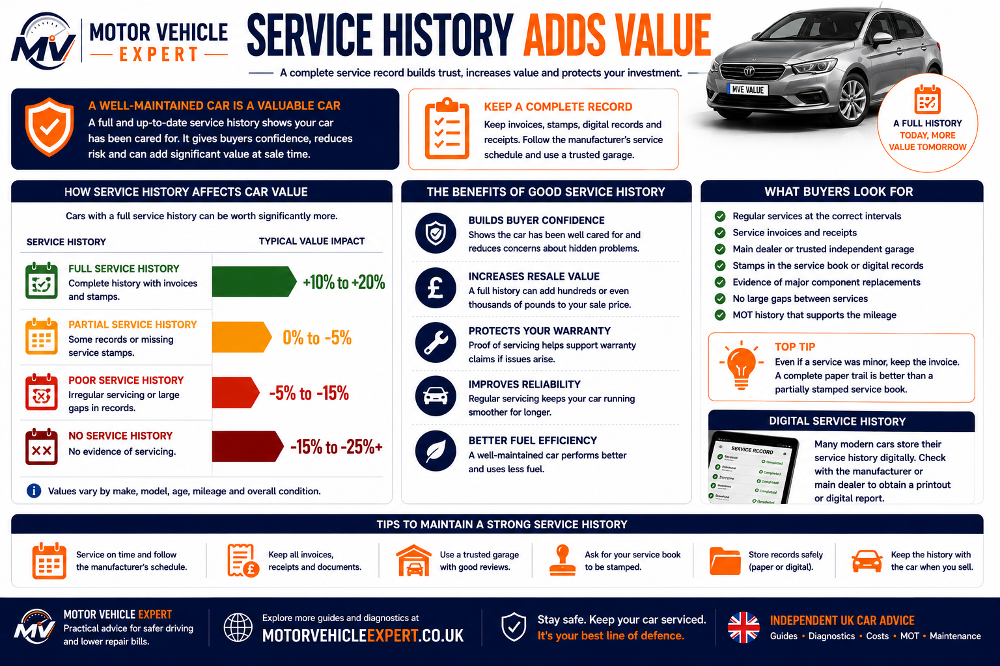

Check symptoms before booking a service or repair
A routine service is designed to maintain the vehicle, but warning lights, noises, smells, overheating, starting problems or poor performance may require separate diagnosis. Use the free Motor Vehicle Expert diagnostic app to organise the symptoms before speaking to a garage.
Recording when the fault happens, which warning lights appear and how the car behaves can help the technician investigate the correct system instead of treating the booking as routine servicing alone.
1. Record The Symptoms
Note when the problem occurs, whether the engine is hot or cold and whether speed, braking, steering or acceleration affects it.
2. Check Warning Lights
Engine, battery, brake, coolant, oil and service lights can point to very different systems and should not be treated as the same fault.
3. Prepare For The Garage
Give the garage a clear symptom description so it can allow time for diagnostics as well as routine maintenance.
4. Plan Before The MOT
Check tyre, brake, light, suspension, emissions and warning-light concerns before the vehicle reaches its test date.
A service may identify visible wear and maintenance issues, but it does not automatically diagnose every warning light, intermittent electrical problem or drivability fault. Tell the garage about symptoms when booking.
How often should you service your car?
Most cars should be serviced every 12 months or when they reach the manufacturer’s mileage interval, whichever comes first. Many everyday vehicles follow annual servicing, while high-mileage drivers, short-trip vehicles and cars used under demanding conditions may benefit from additional checks or interim oil servicing.
Always follow the schedule for the specific vehicle. The correct interval may depend on age, mileage, engine type, oil specification, service indicator and whether the manufacturer uses fixed or variable servicing.
Annual Servicing
Many UK cars are serviced every 12 months to maintain fluids, filters, safety checks and a consistent service record.
Every 12 monthsManufacturer Interval
Some schedules use a mileage limit such as 10,000 or 12,000 miles, while others vary by model and driving conditions.
Follow the handbookEarlier Attention
Repeated short trips, towing, heavy loads, stop-start traffic and high annual mileage can justify more frequent checks.
Inspect more oftenAn MOT checks whether the vehicle meets minimum roadworthiness and emissions requirements on the test date. A service replaces scheduled maintenance items and helps prevent wear, breakdowns and expensive repairs.
Do not compare servicing by price alone. Check the oil specification, filters included, inspection checklist, manufacturer schedule, VAT and whether the garage will contact you before carrying out additional repairs.
How often should a car be serviced in the UK?
As a general guide, many cars should be serviced every 12 months or at the manufacturer’s stated mileage interval, whichever comes first. Annual servicing keeps the maintenance record consistent and gives the garage regular opportunities to identify developing problems.
The correct interval varies by vehicle. Engine design, oil specification, mileage, age and driving conditions all matter. Cars used mainly for short journeys, stop-start traffic, towing, delivery work or high annual mileage can place greater stress on engine oil, brakes, tyres, batteries and emissions systems.
Low-Mileage Cars
Low mileage does not remove the need for servicing. Oil, coolant, brake fluid, tyres, rubber components and batteries can deteriorate with age.
Usually annualHigh-Mileage Cars
Vehicles covering many miles may benefit from interim oil changes and more frequent checks of brakes, tyres, suspension, fluids and filters.
Check mileage intervalShort-Trip Cars
Frequent short trips can prevent the engine from reaching full temperature and may increase battery, oil, exhaust and diesel DPF problems.
Inspect more oftenOlder Cars
Ageing hoses, seals, belts, cooling components, suspension and electrical systems can require closer attention even when annual mileage is modest.
Annual inspection essentialTowing And Heavy Loads
Towing, carrying heavy loads and repeated hill driving can increase stress on the engine, transmission, brakes, cooling system and tyres.
Use severe-duty guidanceVariable Servicing
Some modern cars calculate the next service using mileage, driving style, oil condition and operating time. Do not reset or ignore the reminder without completing the required work.
Follow vehicle display
Use the manufacturer schedule as the starting point, then consider mileage, vehicle age and operating conditions. The earlier limit—time or mileage—normally determines when maintenance is due.
Typical UK servicing schedule
This table is a general planning guide only. Always check the handbook, service display or manufacturer schedule for the exact vehicle.
| Vehicle Use | Typical Approach | Why It Matters |
|---|---|---|
| Average annual use | Service every 12 months or at the stated mileage limit. | Maintains oil, filters, fluid checks and service history. |
| High annual mileage | Follow the mileage limit and consider interim servicing. | Oil, brakes, tyres and filters accumulate wear more quickly. |
| Mostly short journeys | Annual servicing with closer battery, oil and emissions checks. | The engine may rarely reach full operating temperature. |
| Low-mileage or stored car | Continue age-based servicing. | Fluids, rubber parts, tyres and batteries still deteriorate. |
| Towing or heavy use | Check severe-use recommendations. | Additional load increases heat and mechanical stress. |
| Variable-service vehicle | Follow the service display without exceeding maximum limits. | The vehicle estimates maintenance demand from operating conditions. |
Keep a record of the date, mileage, oil specification, filters and additional work at every service. A clear history helps future diagnosis, protects resale value and makes it easier to see which major items are due next.
What is usually included in a car service?
The exact checklist depends on the garage, manufacturer schedule and service level, but a proper service should be much more than simply changing the engine oil. It should inspect the major safety, maintenance and reliability systems that keep the vehicle running correctly throughout the year.
Always ask for an itemised checklist before booking. A cheap service may include only oil and an oil filter, while a more comprehensive service can include additional filters, fluid inspections, battery testing and dozens of visual safety checks.
Engine Oil & Filter
Fresh oil and the correct oil filter protect the engine against wear, overheating and sludge build-up.
Always ReplaceAir, Cabin & Fuel Filters
Clean filters improve engine performance, fuel economy, cabin air quality and overall reliability.
Check Service ScheduleBrakes & Tyres
Brake pads, discs, tyres and pressures should always be inspected because they are critical safety items.
Every Service- ✓Engine oil and oil filter replacement using the correct manufacturer specification.
- ✓Air filter, pollen filter and fuel filter inspection or replacement where scheduled.
- ✓Brake pads, brake discs, brake pipes, brake calipers and brake fluid inspection.
- ✓Tyre tread depth, tyre pressures, tyre age and overall tyre condition.
- ✓Suspension, steering joints, wheel bearings and driveshaft condition.
- ✓Battery health and charging system test where included.
- ✓Coolant, brake fluid, washer fluid and power steering fluid checks where applicable.
- ✓Lights, horn, mirrors, wipers and washer operation.
- ✓Exhaust system inspection for corrosion, damage and visible leaks.
- ✓Visual inspection for oil leaks, coolant leaks, damaged hoses, corrosion and obvious wear.
- ✓Diagnostic scan where warning lights, fault codes or drivability symptoms are present.

Every garage uses a slightly different checklist, so always compare exactly what is included before accepting a quote. A proper service should combine scheduled maintenance with a thorough visual inspection of the vehicle's safety-critical systems.
Keep every service invoice, not just the service stamp. Itemised invoices showing the oil specification, filters replaced, mileage and additional work provide far stronger evidence of maintenance and can significantly improve resale value when selling the vehicle.
For a simple owner maintenance routine between annual services, read our Car Maintenance Checklist UK.
Petrol, diesel and hybrid servicing
Every vehicle needs regular servicing, but the exact maintenance schedule varies depending on the engine type, manufacturer requirements and how the vehicle is used. Modern diesel and hybrid vehicles often have additional systems that require specialist attention.
Petrol Car Servicing
Petrol engines benefit from regular oil and filter changes, spark plug inspection, ignition system maintenance and routine checks of brakes, tyres, cooling and steering components.
Annual servicing recommendedDiesel Car Servicing
Diesel vehicles require careful attention to oil quality, fuel filters, turbochargers, EGR valves and diesel particulate filters, particularly if they are used mainly for short journeys.
Monitor DPF & fuel systemHybrid Car Servicing
Hybrid vehicles still require engine servicing together with inspections of brakes, tyres, suspension, cooling systems, the 12-volt battery and high-voltage safety components.
Follow manufacturer scheduleThe correct oil specification, service interval and replacement parts depend on the vehicle manufacturer. Using the wrong oil or delaying scheduled maintenance can shorten engine life and increase repair costs.
Signs your car may need attention before the next service
Do not wait for the service reminder if the car already shows signs of a developing fault. A routine service may identify wear and maintenance issues, but warning lights, unusual noises, overheating, smoke or poor performance often need separate diagnosis as well.
The earlier a fault is checked, the more likely it is to be manageable. Ignoring symptoms can allow a small maintenance issue to become a breakdown, MOT failure or expensive repair.
Oil Warning Or Noisy Startup
Low oil level, an oil warning light, ticking or rattling on startup can point to overdue maintenance, low pressure or internal wear.
Grinding, Vibration Or Poor Pedal Feel
Brake noise, pulling, vibration or a soft pedal can indicate worn pads, damaged discs, hydraulic faults or seized components.
Dashboard Warning Messages
Engine, battery, brake, coolant, ABS and airbag warnings should be investigated properly rather than left until the next routine service.
Poor Economy Or Loss Of Power
Hesitation, sluggish acceleration, poor fuel economy or uneven running may indicate ignition, fuelling, air intake or emissions-system faults.
Slow Starting Or Flat Battery
Long cranking, weak starting or repeated flat batteries can point to battery, starter motor, alternator or electrical drain problems.
Knocking, Rattling Or Whining
New mechanical noises can come from the engine, bearings, belts, steering, suspension or transmission and should be checked early.
Overheating Or Coolant Loss
Rising temperature, coolant loss, steam or sweet smells can indicate leaks, thermostat faults, water pump problems or radiator issues.
Uneven Wear Or Pulling
Uneven tyre wear, steering vibration or pulling to one side may indicate alignment, tyre pressure, suspension or steering problems.
Smoke Or Strong Odours
Exhaust smoke or strong fuel, oil, coolant or burning smells can indicate leaks, overheating, fuelling faults or exhaust-system problems.
A service reminder is not a fault diagnosis. If the vehicle has a red warning light, poor braking, overheating, heavy smoke, severe knocking or major loss of power, stop driving where safe and arrange professional inspection before continuing.
Write down when the symptom occurs, whether the engine is hot or cold, which warning lights appear and whether speed, braking or acceleration changes it. Clear information helps the garage diagnose the correct system more efficiently.
For further help, use the diagnostics hub, warning lights guide or free diagnostic app.
Interim service vs full service vs major service
Garages often advertise different service packages, but the names alone do not tell the full story. The most important question is whether the work carried out matches your manufacturer's maintenance schedule and uses the correct oil, filters and replacement parts.
An interim service is designed to keep heavily used vehicles in good condition between annual services, while a full service provides the routine yearly maintenance that most cars require. A major service is more comprehensive and includes additional age and mileage-related items.
Interim Service
Usually focuses on engine oil, oil filter and essential safety checks. Popular with high-mileage drivers who want additional maintenance between annual services.
Every 6 months (where needed)Full Service
Includes oil, filters, fluids, brakes, tyres, steering, suspension, battery, lights, wipers and a comprehensive inspection of the vehicle's condition.
Every 12 monthsMajor Service
May include spark plugs, fuel filter, brake fluid, coolant, transmission service items and other manufacturer-scheduled maintenance.
Longer mileage intervals
The names used by garages can vary, but the checklist is what matters. Always compare exactly what is included, which filters are replaced, the oil specification used and whether the work follows the manufacturer's recommended service schedule.
Typical differences between service types
| Service Type | Typical Interval | Usually Includes |
|---|---|---|
| Interim Service | Around 6 months for heavy use | Oil, oil filter and essential safety inspections. |
| Full Service | Typically every 12 months | Oil, filters, fluids and a comprehensive vehicle inspection. |
| Major Service | Manufacturer mileage schedule | Full service plus spark plugs, brake fluid, fuel filter, coolant and other scheduled maintenance. |
Never choose a service package simply because it sounds comprehensive. Ask for the checklist, confirm the oil specification, check which filters are replaced and compare the work with your manufacturer's recommended maintenance schedule. The quality of the service is far more important than the name on the invoice.
How much does car servicing cost in the UK?
Car servicing prices vary according to the vehicle, engine size, oil specification, service level, garage labour rate and replacement parts included. A small petrol car may cost much less to service than a diesel SUV, hybrid, performance model or premium vehicle.
Always compare the actual checklist rather than the advertised headline price. Two garages may both offer a “full service” while including different filters, inspections and scheduled maintenance items.
Oil And Filter Service
Normally includes fresh engine oil and a replacement oil filter, with only limited additional inspections.
£90–£180+Interim Service
A lighter maintenance package for drivers covering high annual mileage or needing extra checks between full services.
£120–£220+Full Service
Usually includes engine oil, filters, fluid checks and a wider inspection of brakes, tyres, steering, suspension and other safety items.
£180–£350+Major Service
May include spark plugs, fuel filter, brake fluid, coolant or other age and mileage-based maintenance in addition to a full service.
£300–£650+Dealer Or Specialist Service
Premium, performance and newer vehicles may require specialist oil, manufacturer procedures, digital records and higher labour rates.
£350–£800+Repairs Found During Service
Brake, tyre, battery, suspension, coolant leak and warning-light repairs are normally charged separately from the service.
Varies by faultUK car servicing cost comparison
These broad guide prices can help with budgeting, but the final bill depends on the vehicle, garage, oil quantity, parts quality and manufacturer schedule.
| Service Type | Typical UK Cost | Usually Suitable For |
|---|---|---|
| Oil and filter service | £90–£180+ | Basic engine oil maintenance between wider inspections. |
| Interim service | £120–£220+ | High-mileage or heavily used vehicles between full services. |
| Full service | £180–£350+ | Annual routine maintenance for many everyday vehicles. |
| Major service | £300–£650+ | Vehicles due additional scheduled maintenance items. |
| Premium or specialist service | £350–£800+ | Premium, performance, hybrid or manufacturer-sensitive vehicles. |
| Additional repairs | Charged separately | Brakes, tyres, batteries, leaks, suspension or diagnostic work. |
An unusually cheap service may exclude the correct oil specification, important filters, manufacturer checks, VAT or a proper service record update. Ask for a written checklist before booking.
Regular servicing is normally cheaper than repairing damage caused by old oil, blocked filters, neglected fluids or undetected wear. Approve additional work only after receiving a clear explanation and itemised price.
For a detailed breakdown, read full car service cost UK and car repair costs guide UK.
Why service history matters
A complete service history helps prove that a vehicle has been maintained properly rather than repaired only when something failed. It can improve buyer confidence, support resale value and make it easier to understand which major maintenance items have already been completed.
Itemised invoices are usually more useful than stamps alone because they show the date, mileage, oil specification, filters, parts and additional work carried out. When buying a used car, compare these records with the MOT history and the vehicle’s current condition.
Itemised Invoices
Invoices should record the service date, vehicle mileage, oil specification, filters fitted and any additional repairs completed.
Best proof of maintenanceScheduled Repair Records
Keep proof of cambelt, water pump, spark plugs, brake fluid, fuel filters, clutch, gearbox and cooling-system work.
Reduces future uncertaintyConsistent History
Service mileage should increase logically and match MOT records, invoices, ownership dates and the condition of the vehicle.
Check every recordManufacturer Service History
Some newer vehicles use digital service records instead of a paper book. Confirm that the garage has updated the correct system.
Protect the recordGaps In Servicing
Long gaps, vague stamps or missing invoices can make it difficult to confirm whether oil changes and major scheduled work were completed.
Investigate carefullyFuture Buyer Confidence
A clear folder of invoices can make the car easier to sell and may help support a stronger asking price later.
Keep every document
Strong service history combines dated invoices, consistent mileage, correct oil and filter records, and proof of important scheduled maintenance. Stamps alone provide much less detail.
When buying a used car, compare the service history with MOT mileage, repair invoices and the vehicle’s condition. If the records do not match the seller’s explanation, investigate before agreeing a price.
A car without complete service records is not automatically a bad purchase, but it carries more uncertainty. Budget for overdue maintenance and consider an independent inspection before buying.
Useful guides: used car with no service history, how to check MOT history and used car inspection checklist.
Should you service your car before an MOT?
A service is not the same as an MOT, but routine maintenance can identify developing faults before the vehicle reaches the test station. Lights, tyres, brakes, suspension, steering, wipers, washers, fluid leaks and dashboard warning lights are all worth checking before the MOT is due.
An MOT checks whether the vehicle meets minimum roadworthiness and emissions requirements on the test date. A service replaces scheduled maintenance items, checks fluids and helps reduce wear. One does not replace the other.
Car Service
Replaces engine oil and scheduled filters while inspecting fluids, brakes, tyres, battery condition, steering, suspension and visible leaks.
MOT Test
Checks whether the vehicle meets minimum UK safety, roadworthiness and emissions standards on the day of inspection.
Car service vs MOT test
| Item | Car Service | MOT Test |
|---|---|---|
| Main purpose | Maintenance and reliability | Legal roadworthiness inspection |
| Engine oil replacement | Yes, when included | No |
| Filter replacement | Yes, according to schedule | No |
| Safety checks | Yes | Yes |
| Emissions assessment | May be checked diagnostically | Part of the statutory test |
| MOT certificate | No | Yes |
| Helps prevent breakdowns | Yes | Not its main purpose |
A car can pass its MOT while being overdue a service. It can also receive a full service and still fail its MOT because of defective tyres, brakes, lights, suspension, emissions or another roadworthiness fault.
If your MOT is due soon, read common MOT failure reasons UK and how to prepare for an MOT test UK.
Maintenance items that are easy to forget
Engine oil and filters receive most of the attention, but several important maintenance items are controlled by age or mileage and may not be included automatically in every routine service. Missing these can lead to breakdowns, poor performance or expensive repairs.
Brake Fluid
Brake fluid absorbs moisture over time, which can reduce braking performance and increase corrosion inside hydraulic components.
Follow the scheduled intervalCoolant Condition
Coolant protects against freezing, overheating and internal corrosion. Check level, strength, leaks, hoses and replacement interval.
Inspect regularlyCambelt Replacement
A timing belt must be replaced at the specified age or mileage interval. Failure can cause severe internal engine damage.
Never exceed the intervalSpark Plugs
Worn spark plugs can cause difficult starting, misfires, poor fuel economy and reduced engine performance.
Replace when scheduledFuel Filter
A restricted diesel fuel filter can contribute to poor starting, hesitation, low fuel pressure and injector-system problems.
Check the service scheduleCabin Filter & Air Conditioning
A blocked cabin filter can reduce airflow and demisting performance, while air-conditioning systems may need separate servicing.
Inspect annuallyBattery Testing
Battery performance can decline gradually. Testing before winter may identify weakness before starting problems appear.
Test before cold weatherTyre Age
Tyres can harden, crack or deteriorate even when tread depth remains legal, particularly on low-mileage vehicles.
Check condition and dateAuxiliary Belts And Coolant Hoses
Cracked belts, swollen hoses, oil contamination and coolant staining can reveal developing faults before failure occurs.
Inspect visuallyKeep a separate record of age and mileage-based maintenance such as cambelts, brake fluid, coolant, spark plugs and fuel filters. These items may not be due at every annual service, but they should not be forgotten.
Why regular servicing matters
Regular servicing protects more than the engine. It helps identify wear throughout the braking, steering, suspension, cooling, electrical and tyre systems while maintaining a documented record of how the vehicle has been cared for.
1. Better Reliability
Fresh oil, clean filters and routine inspections reduce the likelihood of avoidable breakdowns and neglected maintenance faults.
2. Improved Safety
Brake, tyre, steering and suspension checks can identify deterioration before it affects control or becomes an MOT failure.
3. Lower Repair Risk
Finding a small leak, weak battery or worn component early is often cheaper than waiting for a larger failure.
4. Better Efficiency
Correct oil, clean filters and properly maintained engine systems may help the vehicle run more smoothly and efficiently.
5. Stronger Resale Value
A clear service history with detailed invoices can improve buyer confidence and make the vehicle easier to sell.
6. Easier Fault Diagnosis
Accurate records help technicians understand what work has already been completed and which service items are due next.
The cheapest repair is often the fault found early. Regular servicing creates repeated opportunities to identify wear before it becomes a breakdown, safety problem or major repair bill.
Questions to ask before accepting a service quote
Service packages vary between garages. Ask these questions before booking so you understand exactly what is included, which parts will be used and whether extra work requires your approval.
Which Service Level?
Is the garage carrying out an oil service, interim service, full service, major service or manufacturer-scheduled service?
Which Oil Specification?
Confirm that the oil meets the exact manufacturer grade, approval and low-ash requirements where applicable.
Which Filters Are Included?
Ask whether the oil, air, cabin, pollen and fuel filters are included or charged separately.
Is VAT Included?
Check whether the advertised figure includes VAT, labour, environmental charges and disposal fees.
Will I Receive An Itemised Invoice?
The invoice should show the date, mileage, oil specification, filters, parts and additional work completed.
Will The Service Record Be Updated?
Confirm whether the paper service book or manufacturer digital service record will be updated correctly.
Are Scheduled Extras Included?
Ask whether spark plugs, brake fluid, fuel filter, coolant or other age and mileage-based items are due and included.
Will Extra Repairs Need Approval?
The garage should contact you with an itemised price before carrying out work outside the agreed service.
Are Diagnostics Separate?
Warning-light diagnosis, fault-code investigation and intermittent electrical problems may require additional diagnostic time.
What Parts Will Be Used?
Ask whether the garage uses genuine, OEM-equivalent or quality aftermarket filters and components.
Do not assume every garage's “full service” includes the same work. Compare the checklist, oil specification, filters, VAT, service-record update and approval process—not just the headline price.
Common servicing mistakes drivers should avoid
Many servicing problems are caused not by the garage, but by misunderstandings about what a service includes, when maintenance is due and how important the correct oil, filters and records are. Avoiding these mistakes can reduce breakdown risk, protect resale value and prevent small faults becoming expensive repairs.
Assuming An MOT Replaces Servicing
An MOT checks minimum roadworthiness on the test date. It does not replace engine oil, filters, fluids or scheduled maintenance.
Choosing By Price Alone
The cheapest quote may exclude important filters, correct oil, wider inspections, VAT or a proper service-record update.
Ignoring Oil Specification
Modern petrol, diesel, turbo and emissions-controlled engines often require an exact manufacturer-approved oil specification.
Not Keeping Itemised Invoices
A service stamp alone gives limited detail. Keep invoices showing mileage, oil specification, filters, parts and additional work.
Forgetting Age-Based Maintenance
Brake fluid, coolant, spark plugs, fuel filters and cambelts may not be included in every annual service but still have important intervals.
Waiting For Warning Lights
Routine maintenance should be completed before faults become serious enough to trigger warning lights, poor performance or breakdowns.
Do not wait for the car to feel wrong before servicing it. By the time warning lights, overheating, grinding brakes or severe noises appear, the vehicle may already need diagnosis and repair rather than routine maintenance alone.
Best mechanic-style advice for long-term reliability
A good service should prevent problems, not simply react to them. Engine oil, filters, brakes, tyres, fluids, battery condition, steering, suspension, lights, belts, hoses and leaks all matter. The more miles the vehicle covers and the harder it is used, the more important regular maintenance becomes.
For older cars, high-mileage vehicles or cars with incomplete history, do not rely only on the dashboard service reminder. Check the actual maintenance record, fluid condition, warning lights, tyre wear, brake condition and age-related items such as cambelts, coolant and brake fluid.
Follow Time And Mileage
Service the vehicle at the earlier of the age or mileage interval unless the manufacturer gives a different approved schedule.
Use Correct Parts And Fluids
Correct oil, quality filters and suitable replacement parts matter more than choosing the cheapest advertised service package.
Keep Complete Records
Detailed invoices make future maintenance easier, support diagnosis and improve confidence when the vehicle is sold.
Treat servicing as preventative maintenance rather than an annual expense to minimise. A properly serviced car is more likely to remain reliable, safer to drive and easier to sell. When faults are identified, ask for a clear explanation, realistic repair priority and itemised price before approving additional work.
Related servicing, maintenance and repair guides
Explore more Motor Vehicle Expert guides covering routine servicing, repair costs, warning lights, maintenance schedules and used car ownership.
Free Diagnostic App
Identify likely faults before booking repairs or servicing.
Open diagnostic app →Full Car Service Cost UK
Compare average UK servicing prices and what should be included.
Read guide →Car Maintenance Checklist
Simple routine checks every UK driver should carry out.
Read guide →Car Repair Costs Guide
Typical repair prices for common UK vehicle faults.
Read guide →Brake Pad Replacement Cost
Average brake repair costs and replacement advice.
Read guide →How Long Do Brake Pads Last?
Expected lifespan and warning signs of worn brake pads.
Read guide →Clutch Replacement Cost
Understand clutch wear and replacement pricing.
Read guide →Alternator Replacement Cost
Charging system faults, diagnosis and repair costs.
Read guide →Starter Motor Replacement
Symptoms of starter failure and repair costs.
Read guide →Wheel Bearing Replacement
Noisy wheel bearings, diagnosis and replacement costs.
Read guide →Coolant Leak Repair
Prevent overheating by recognising coolant leaks early.
Read guide →Cambelt Replacement Guide
When to replace a cambelt and why intervals matter.
Read guide →Battery Health Check
Learn how to test your battery before it fails.
Read guide →Battery Warning Light
Understand charging system warning lights.
Read guide →Engine Management Light
Common causes and diagnostic advice.
Read guide →Common MOT Failures
The faults most likely to cause an MOT failure.
Read guide →Prepare For Your MOT
Simple checks before taking your vehicle for its MOT.
Read guide →Used Car Service History
Is a used car without service history worth buying?
Read guide →Diagnostics Hub
Browse hundreds of diagnostic articles and fault guides.
Visit hub →Guides Hub
Browse all Motor Vehicle Expert maintenance and ownership guides.
Visit guides →Car servicing FAQs
These are some of the most common questions UK drivers ask about service intervals, warning lights, maintenance schedules, service history and choosing the correct service package.
How often should I service my car?
Many cars should be serviced every 12 months or when they reach the manufacturer’s mileage interval, whichever comes first. Check the handbook, service display or official maintenance schedule for the exact vehicle.
Is a car service the same as an MOT?
No. An MOT is a legal roadworthiness and emissions inspection. A service is preventative maintenance that replaces scheduled items, checks fluids and helps reduce wear and breakdown risk.
Can a car pass its MOT without being serviced?
Yes. A car can pass an MOT while being overdue for engine oil, filters, brake fluid or other maintenance. An MOT pass does not prove the vehicle has been serviced properly.
Can I drive if my service light is on?
A routine service reminder normally means scheduled maintenance is due rather than an immediate breakdown. Book the service promptly and do not confuse it with red oil-pressure, brake, coolant-temperature or charging-system warning lights.
Do low-mileage cars still need servicing?
Yes. Engine oil, coolant, brake fluid, tyres, rubber components and batteries deteriorate with time as well as mileage. Low annual mileage does not remove the need for age-based maintenance.
Should I service my car before an MOT?
It can be helpful because a service may identify worn tyres, brakes, lights, wipers, leaks or suspension concerns before the test. However, servicing does not guarantee an MOT pass.
What is normally included in a full service?
A full service usually includes engine oil and oil filter replacement, scheduled filter checks, fluid inspections and checks of brakes, tyres, steering, suspension, battery, lights, wipers, exhaust and visible leaks. Exact checklists vary between garages.
What is the difference between an interim, full and major service?
An interim service is a lighter maintenance package, often for high-mileage use. A full service provides broader annual maintenance, while a major service normally adds extra scheduled items such as spark plugs, fuel filters, brake fluid or coolant where required.
Is a full service worth it?
Yes, when it follows the vehicle’s maintenance schedule and includes the correct oil, filters and inspections. It can identify wear early, reduce breakdown risk and help maintain service history.
What happens if I skip servicing?
Skipping servicing can leave old oil, restricted filters, low fluids, worn brakes, weak batteries and developing leaks unnoticed. This may increase wear and lead to larger repair bills later.
Does service history matter when buying a used car?
Yes. A consistent service history helps show how the vehicle has been maintained and which major jobs have already been completed. Itemised invoices are usually more useful than stamps alone.
Can servicing fix dashboard warning lights?
Sometimes, but not automatically. A maintenance-related issue may improve after servicing, but engine, ABS, airbag, battery and emissions warnings often require separate diagnostic testing.
Does a service include diagnostic testing?
Not always. Some garages include a basic scan, while others charge separately for fault-code reading, live-data testing and investigation of intermittent problems. Mention all warning lights and symptoms when booking.
Does a full service include brake pads or tyres?
Inspection is normally included, but replacement parts are usually charged separately. The garage should contact you with an itemised price before carrying out additional repairs.
Does a full service include spark plugs?
Not necessarily. Spark plugs are often replaced according to an age or mileage schedule and may form part of a major service rather than every annual full service.
How long does a car service usually take?
An oil or interim service may take around one to two hours, while a full or major service can take several hours depending on the vehicle, garage workload and whether additional faults are found.
Should I use a main dealer or an independent garage?
A main dealer may suit newer, warranty-sensitive or digitally recorded vehicles. A reputable independent garage can offer good value when it uses the correct oil, quality parts and the proper manufacturer schedule.
What should I ask before booking a service?
Ask which service level is included, what oil specification will be used, which filters are replaced, whether VAT is included, whether the service record will be updated and whether extra repairs require approval.
Can I supply my own oil or filters?
Some garages allow this, while others use only their own approved parts and fluids. Confirm the policy before booking and make sure any supplied oil meets the exact manufacturer specification.
How can I keep a strong service history?
Keep itemised invoices showing the date, mileage, oil specification, filters and additional work. Retain proof of major maintenance such as cambelt, brake fluid, coolant, spark plugs and fuel-filter replacement.
Follow the correct time and mileage schedule, compare service checklists rather than prices alone, keep detailed invoices and arrange diagnosis separately when warning lights or drivability faults are present.